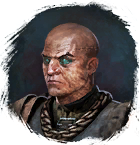
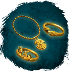
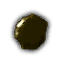
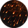

Открыть в интерактивной вики →
| Уровень | 36 |
|---|---|
| Сила (PvE) | 1131 |
| Аспект | Yantrei |
| Здоровье | 2600 |
| Мана | 2500 |
| Выносливость | 2500 |
| Респаун | 90 минут - 120 минут |
Локация
Команда

Дроп
 (20-30)
(20-30) 
Огни Теллабага
| Сеты | Синергетики | Эпики | |||
| Огни Теллабага | 20-30 ур. |  | |||
| Прочее: - | |||||
Умения
 Обычная атака Обычная атака
Обычная атака Обычная атака
Огненный Дождь Огненный Дождь — магическая искра, огненный шар